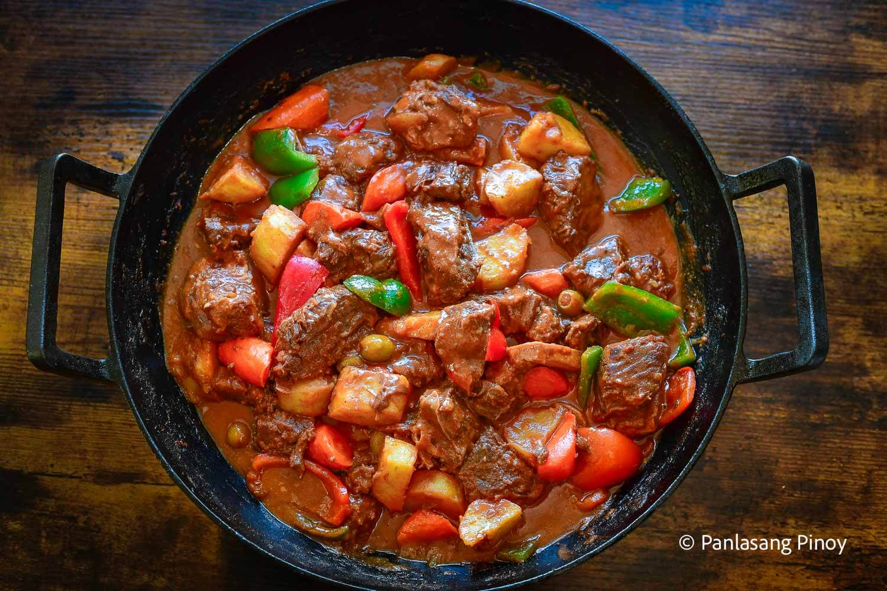

Caldereta

Description
Caldereta is a hearty Filipino stew made with beef, liver spread, tomato
sauce, and vegetables like potatoes and bell peppers. It’s known for its
rich, slightly spicy, and savory tomato-based sauce, often served during
special occasions.
Ingredients
- 1 lb beef, cubed
- 2 tbsp cooking oil
- 3 cloves garlic, minced
- 1 onion, chopped
- 1 cup tomato sauce
- 1/2 cup liver spread (or mashed liver)
- 2 potatoes, cubed
- 1 carrot, sliced
- 1 bell pepper, sliced
- 1 cup beef broth or water
- 1 small can green peas (optional)
- 1–2 pieces red chili (optional, for spice)
- Salt and pepper to taste
Steps
- Heat oil in a pot and sauté garlic and onion until fragrant.
- Add beef and cook until browned on all sides.
-
Pour in tomato sauce and broth; simmer until beef is tender (about 1
hour).
-
Add liver spread, potatoes, and carrots; cook until vegetables are soft.
-
Add bell pepper, green peas, and chili (if using); simmer for another
5–10 minutes.
- Season with salt and pepper to taste. Serve hot with rice.